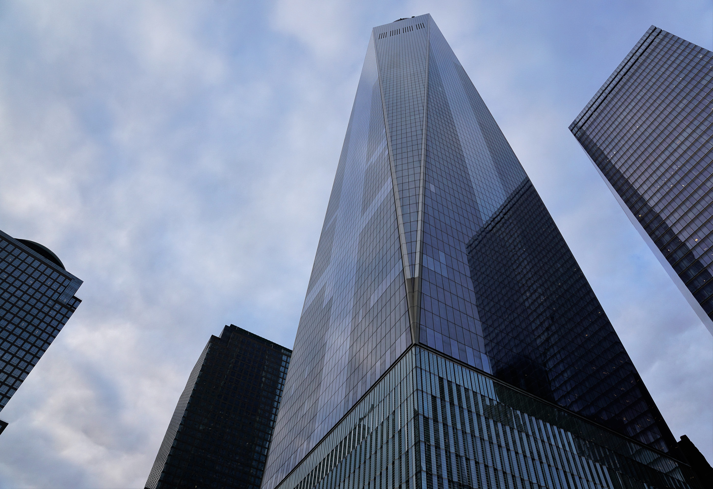
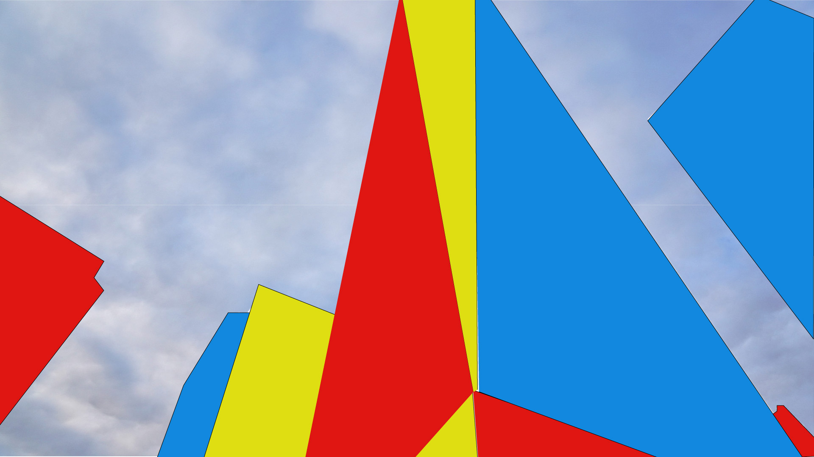

Before making my shapes for the building, I first picked my triad color theme on Adobe color. I wanted to use the primary colors for my illustrated environment, which are yellow, red, and blue. So I picked the closest colors I could find on Adobe Color. I picked de1612 for my red, dede12 for my yellow, and 1288de for my blue. After picking my colors, I put my original image environment in photoshop to remove the buildings. I used the quick selection tool to select the buildings and then I deleted them. I then selected the image and put it back into Illustrator. In order to get the shapes of the building I used the selection tool, get the shapes of the building. I used the color tool, put the hexadecimal code for the colors I chose, and filled in the shapes. After each shape was filled, I made sure to put the shapes in their correct spots to form the buildings. .
Go back to homepage